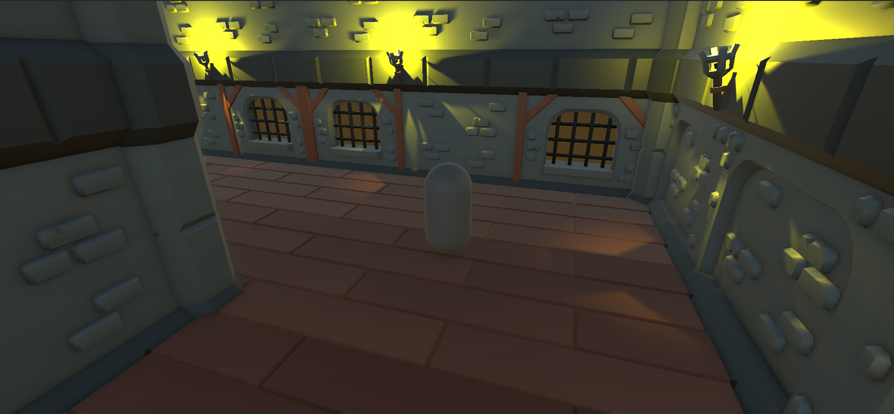
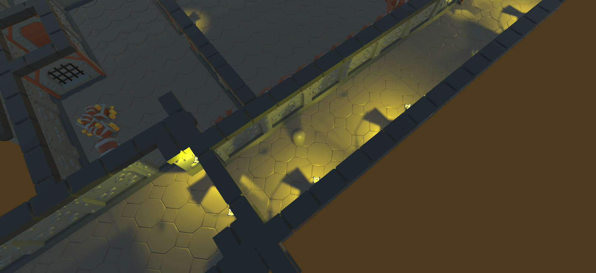
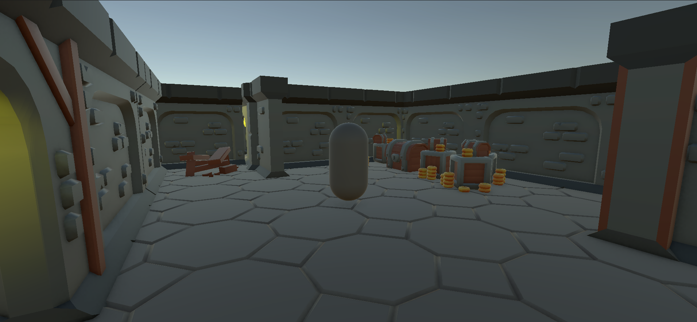

PROYECTO 05
POINT-TO-CLICK
Proyecto 3D de aventura y exploración, enfocado en la interacción con el entorno y la exploración de diferentes escenarios.

Sobre el proyecto
Point-to-Click es un proyecto desarrollado en Unity como parte del proceso de aprendizaje en desarrollo de videojuegos y creación de experiencias interactivas.
El proyecto está ambientado en un escenario de aventura y exploración, donde el jugador puede recorrer diferentes zonas e interactuar con elementos del entorno.
Durante el desarrollo se trabajaron conceptos relacionados con el movimiento del jugador, interacción, diseño de escenarios 3D, iluminación y ambientación.
Tecnologías
Características
Exploración
Recorrido por diferentes zonas y habitaciones del escenario.
Interacción
Sistema orientado a la interacción del jugador con diferentes elementos del entorno.
Escenario 3D
Construcción de un entorno 3D con diferentes habitaciones y elementos decorativos.
Ambientación
Uso de iluminación y elementos visuales para crear una atmósfera de aventura.
Galería


